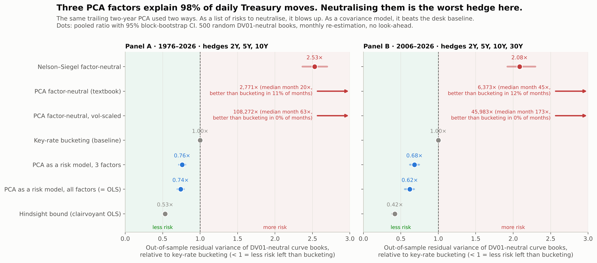
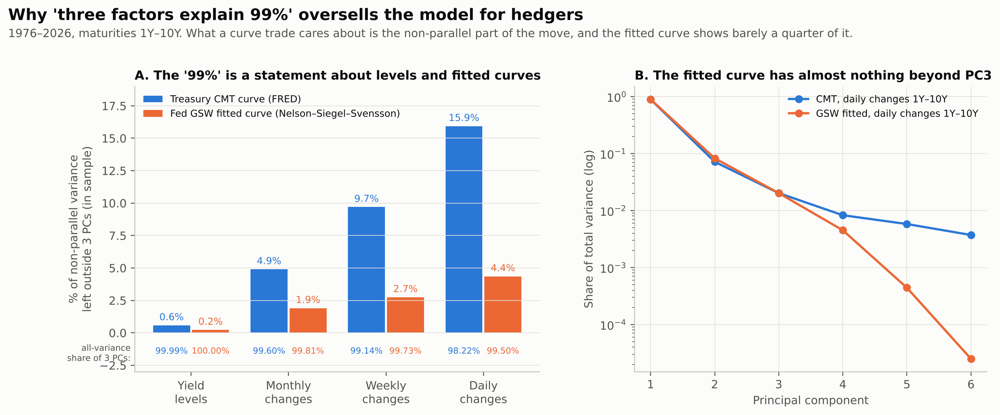
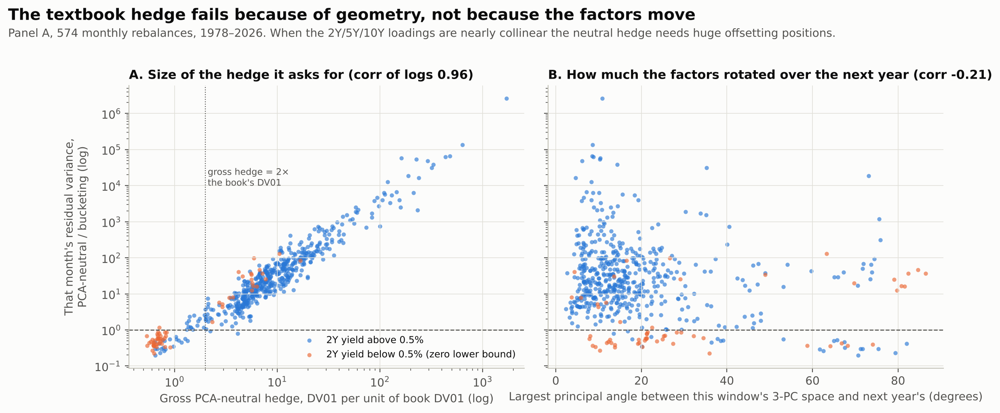
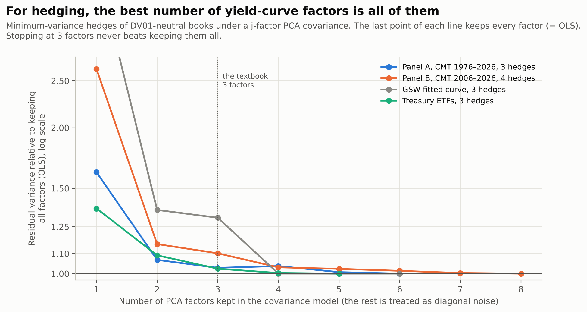
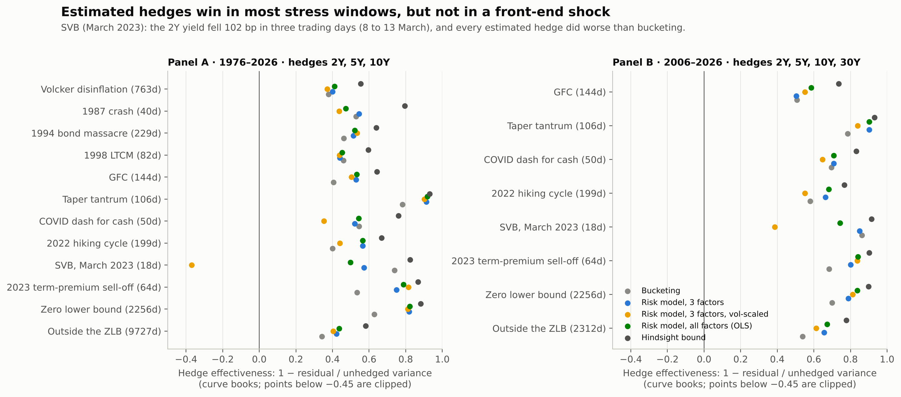
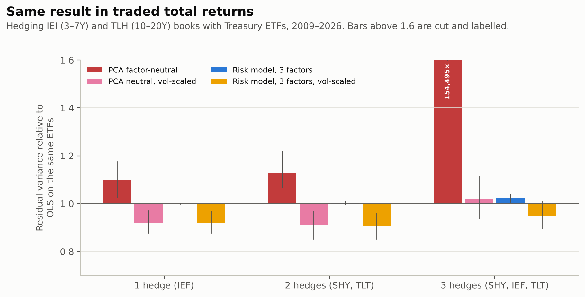

Working paper · Project 18
Fifty years of out-of-sample tests of yield-curve PCA as a hedging tool, against the desk's model-free baseline
Project 18 of 30 Quant Research Projects · Working paper, November 2026

Every fixed-income course teaches the same fact: three principal components (level, slope and curvature) explain about 99% of the movement of the Treasury yield curve (Litterman & Scheinkman, 1991). The usual next step is the "PCA hedge": choose as many hedge instruments as factors, and size them so that the book has zero exposure to each factor. This project asks: does that hedge, or any hedge built from yield-curve PCA, leave less risk out of sample than what a desk does without a model?
I run a walk-forward hedging experiment on the daily US Treasury constant-maturity curve. Panel A covers 1Y–10Y from 1976 to 2026, hedged with the 2Y, 5Y and 10Y. Panel B covers 1Y–30Y from 2006 to 2026, hedged with the 2Y, 5Y, 10Y and 30Y. Every month the models are re-estimated on the previous two years of data and frozen for the next 21 days. There are 12,046 out-of-sample days in Panel A and 4,631 in Panel B. The books are 500 random DV01-neutral curve positions and 500 random outright positions in the maturities that are not hedge instruments. The baseline is key-rate bucketing: each maturity's DV01 is split between its two neighbouring hedge points by linear interpolation, with no model at all. Two contrasts test the mechanism: the same experiment on the Federal Reserve's fitted GSW zero curve, and on the total returns of five traded Treasury ETFs.
Main findings
PCA of the yield curve is the most-taught model in fixed income, and the reason it is taught is hedging. Litterman & Scheinkman (1991) introduced it to argue that duration hedges miss the slope and curvature risk. Tuckman & Serrat (2011, ch. 6) teach the "PCA hedge": with as many instruments as factors, choose positions that cancel the book's exposure to each factor. Risk systems report "level, slope and curvature" exposures, and interview questions ask how many factors "explain the curve".
Two things are rarely checked, and this project tests both:
The comparison that matters to a desk is with key-rate bucketing: map each bond's DV01 onto the neighbouring hedge points by maturity and hedge those. It needs no estimation, which is a strength when correlations shift. A model has to beat it to earn its place.
| Set | Source | Sample | Use |
|---|---|---|---|
| Treasury constant-maturity yields (CMT), 1M–30Y | FRED (DGS series), daily | 1962-01 → 2026-11-19 | Panels A and B |
| Gürkaynak–Sack–Wright (GSW) Nelson–Siegel–Svensson parameters | Federal Reserve, feds200628 |
1961-06 → 2026-11-13 | Panel G: fitted zero curve, same maturities |
| iShares SHY, IEI, IEF, TLH, TLT adjusted closes | Yahoo Finance | 2007-01 → 2026-11-20 | Panel E: traded total returns |
All three were downloaded on 2026-11-22 in a browser, because the cloud container cannot reach FRED, the Fed
or Yahoo. They are committed in data/. The GSW zero yields are rebuilt from the six daily parameters, and
they match the published SVENY columns to 3×10⁻⁴ percentage points.
Bills (1M–6M) are excluded from the hedging panels. Bill yields are driven by money-market supply and policy expectations, sit at zero for years, and are not hedged with notes in practice. CMT yields are quoted to 1 bp, so 11% of daily changes in Panel A are exactly zero. The rounding noise (variance 1/12 bp²) is about 0.2% of a typical daily variance. It does inflate the higher components slightly. §7 discusses how much.
A book holds DV01 exposures w (dollars per basis point) at the target maturities: 1Y, 3Y and 7Y in Panel A, and 1Y, 3Y, 7Y and 20Y in Panel B. The hedge holds h at the hedge maturities. The daily hedged P&L is −(Δy_T′w + Δy_H′h), with Δy in bp. Every model below returns a matrix A with h = −Aw, so one "residual design" e_t = Δy_T,t − Δy_H,t A serves every possible book. The hedge sets by number of instruments K are:
| K | Panel A | Panel B | Panel E |
|---|---|---|---|
| 1 | 10Y | 10Y | IEF |
| 2 | 2Y, 10Y | 2Y, 10Y | SHY, TLT |
| 3 | 2Y, 5Y, 10Y | 2Y, 10Y, 30Y | SHY, IEF, TLT |
| 4 | — | 2Y, 5Y, 10Y, 30Y | — |
With one instrument, bucketing puts the whole DV01 on the 10Y, which is a plain duration hedge. For a DV01-neutral curve book that means no hedge at all, so the K = 1 rows compare the models with an unhedged curve book.
Books. There are 500 random "outright" books (i.i.d. normal exposures) and 500 random "curve" books (exposures summing to zero, so they are DV01-neutral). Each has unit norm, and the seed is 18. Curve books are the headline, because a curve book is exactly what PCA is supposed to help with. Three named trades (bullet, steepener, butterfly) are reported too.
| Model | What it does | Estimated? |
|---|---|---|
| Bucketing (baseline) | Splits each target DV01 between the two neighbouring hedges, linear in maturity, flat beyond the ends | No |
| Nelson–Siegel neutral | Zero exposure to NS level, slope and curvature (Diebold–Li decay λ = 0.0609/month). K = 4 adds a Svensson hump | No |
| PCA neutral (textbook) | Zero exposure to the first K PCs of the trailing covariance of Δy | Yes |
| PCA neutral, vol-scaled | Same, on EWMA-standardised changes (λ = 0.97); loadings rescaled by today's EWMA vols | Yes |
| PCA risk model, j factors (fmj) | Minimum-variance hedge under Σ = V_j Λ_j V_j′ + Ψ, with Ψ diagonal | Yes |
| … vol-scaled (fmvj) | Same, on the EWMA-standardised correlation, rescaled by today's vols | Yes |
| OLS | Minimum-variance regression of the book on the hedges; equals fmj with every component kept | Yes |
| Hindsight bound | OLS fitted on the 21 holding days themselves | Uses the future, reference only |
The window is the trailing 504 days (two years). Hedges are re-estimated every 21 trading days and held fixed in between. The EWMA volatility for day t uses data up to t−1, with a 0.25 bp floor so that zero-lower-bound days cannot explode the standardisation. A unit test checks that changing the future never changes the past volatility. Nothing a model uses is dated after the rebalance close.
For a family of books the daily loss is the mean squared hedged P&L. It is divided by the trailing 252-day mean of the unhedged loss, which is known ex ante. Without that scaling the 1979–82 years would dominate a 50-year average. Models are compared by the ratio of mean losses. The 95% CIs come from a moving-block bootstrap of days (63-day blocks, 1,000 resamples), and the tests are HAC Diebold–Mariano. Because one blow-up month can dominate a mean, every comparison also reports the median monthly ratio, the share of months won, and a binomial sign test over months. The planned comparisons (PCA vs bucketing, OLS vs bucketing, fm3 vs OLS, fmv3 vs fm3, vol-scaled vs plain PCA, NS vs bucketing, for each panel, K and book family: 102 tests) are Holm-adjusted together.

| Data, 1Y–10Y, 1976–2026 | Share of all variance, 3 PCs (CMT) | Non-parallel variance left by 3 PCs: CMT | … GSW fitted |
|---|---|---|---|
| Yield levels | 99.99% | 0.6% | 0.2% |
| Monthly changes | 99.60% | 4.9% | 1.9% |
| Weekly changes | 99.14% | 9.7% | 2.7% |
| Daily changes | 98.22% | 15.9% | 4.4% |
The headline number depends almost entirely on what is decomposed. On levels three factors capture 99.99%, but levels are dominated by fifty years of trend. On daily changes, which is what a daily hedge faces, they capture 98.2% of the total. They capture only 84% of the part of the move that a DV01-neutral book is exposed to. Out of sample, using the trailing window's PCs on the next 21 days, the median share left is 15.2% in Panel A and 11.8% in Panel B. H1 holds. The fitted GSW curve shows only about a quarter of this residual. Its eigenvalues fall off a cliff after PC3 (panel B of the figure), because a six-parameter curve cannot express anything else. Studies run on fitted curves therefore find that PCA works better than it does on market yields.
Ratios of out-of-sample residual variance to bucketing, curve books (outright books in brackets):
| Model | Panel A, K = 3 | Panel B, K = 4 | Median month (A / B) | Months better than bucketing (A / B) |
|---|---|---|---|---|
| Nelson–Siegel neutral | 2.53 (2.32) | 2.08 (2.14) | 2.57 / 2.15 | 4% / 6% |
| PCA neutral (textbook) | 2,771 (2,067) | 6,373 (6,049) | 20.4 / 44.7 | 11% / 12% |
| PCA neutral, vol-scaled | 108,272 | 45,983 | 62.6 / 173 | 0% / 0% |
| Bucketing | 1 | 1 | 1 | — |
| PCA risk model, 3 factors | 0.76 [0.72, 0.80] (0.72) | 0.68 [0.62, 0.74] (0.64) | 0.73 / 0.66 | 83% / 86% |
| PCA risk model, all factors (OLS) | 0.74 [0.70, 0.78] (0.70) | 0.62 [0.55, 0.68] (0.59) | 0.71 / 0.57 | 87% / 94% |
| Hindsight bound | 0.53 | 0.42 | 0.52 / 0.39 | 99% / 100% |
The pooled ratios for the factor-neutral hedges are driven by blow-up months, and their bootstrap intervals are correspondingly wide. With such heavy tails the DM test cannot reject equality (Holm p = 1), even at 2,771×. The monthly evidence is unambiguous: the textbook hedge loses to bucketing in 89% of months in Panel A (sign test, Holm p < 10⁻⁴). H2 holds, more strongly than stated. The PCA-neutral hedge is not merely no better. It is the worst model tested. With fewer instruments it is less fragile. With K = 2 in Panel A it is roughly level with bucketing (1.19, CI 0.95–1.52; median month 0.87). With K = 2 in Panel B it is better (0.79). With a single instrument (a PCA-weighted duration hedge) it beats bucketing by 28–36%. The trouble starts with the third factor.
The risk-model use of the same PCA beats bucketing in every panel, at every K ≥ 2 and in both book families (Holm p < 10⁻⁴ for OLS vs bucketing in all 14 A/B cells). H3 holds. How big the gain is depends on where the book sits:
| Curve books, without any 1Y exposure | Panel A | Panel B |
|---|---|---|
| PCA risk model, 3 factors | 0.93 | 0.93 |
| OLS | 0.91 | 0.88 |
| PCA neutral | 378 (median month 1.39) | 34 (median month 1.82) |
Bucketing maps the 1Y flat onto the 2Y. A desk would do the same, but the 1Y moves less than the 2Y in most
regimes, and the estimated hedges learn that beta. On maturities between hedge points the advantage of
estimation is 7–12%, which is real but modest (results/robustness_without_1y.csv).
Named trades (Panel A, K = 3, daily residual volatility in bp of DV01): a 7Y bullet goes from 7.61 unhedged to 1.50 with bucketing and 1.43 with OLS. A 3s7s steepener goes from 3.34 to 2.44 and 2.33. For the 1s3s7s butterfly, bucketing barely helps (2.79 → 2.76), OLS gets to 2.55, and the PCA-neutral hedge turns it into a 345 bp-per-day position. Panel B is similar: the 7s20s steepener goes 2.60 → 1.30 (bucketing) → 1.21 (OLS).

The usual explanation for poor PCA hedges is that the factors are unstable. They do move. The median angle between a two-year window's PC and the next year's is 5° for level, 12° for slope and 19° for curvature (Panel A). The loadings in figure 5 show the level factor turning into a long-end factor at the zero lower bound. But rotation does not explain the failures. Month by month, the log loss ratio of the PCA-neutral hedge has correlation −0.21 with the largest principal angle, and 0.96 with the log of the gross hedge it requires.
The mechanism is conditioning. With K instruments the neutral hedge solves L_H′h = −L_T′w, where L_H is the K×K matrix of factor loadings at the hedge maturities. On 1Y–10Y data the third PC is usually a front-end shape: its median loadings at 2Y/5Y/10Y are (+0.44, +0.09, −0.31). Over those three points that is almost a rescaled slope, so L_H is badly conditioned (median condition number 11, above 20 in a quarter of months, and above 300 in the worst ones). To neutralise it the hedge has to take large, offsetting positions. These are exact in the estimation window and are blown up by any small change afterwards. The Panel B rows with 2Y/10Y/30Y show the same thing with a different instrument set (145×).
A simple ex-ante rule exposes it. If a desk only trusts the PCA hedge when its gross size is at most 2× the book's DV01, it trusts it in 13% of months in Panel A. In those months it beats bucketing in 78% of cases (median ratio 0.54). In the other 87% of months it beats bucketing in 0.4% of cases (median 28×). The months that pass are mostly at the zero lower bound. With the 2Y yield below 0.5%, the front end barely moves, the PCs separate, the median gross hedge is 0.7×, and the textbook hedge beats bucketing in 63% of months.

If PCA is used as a covariance model, the number of factors j is a separate choice from the number of instruments. The residual variance falls almost monotonically in j. Stopping at 3 costs +2.8% in Panel A (K = 3) and +10.1% in Panel B (K = 4) relative to keeping all factors (Holm p < 10⁻⁴; months won by fm3 32% and 19%). In Panel E it costs +2.3% (Holm p = 1 for curve books, p = 0.005 for outright books). For one or two instruments the cost is below 0.5%, because those hedges mostly need the first two factors. H4 holds wherever it can matter. The discarded components are small, but they carry structure such as the 1Y–2Y spread, the 20Y anomaly in Panel B and the belly's idiosyncratic moves, and a minimum-variance hedge uses it. On the GSW fitted curve truncation costs +30%. There the higher components are exact, deterministic features of the fitting function, so they are perfectly hedgeable.
There is no regularisation benefit to offset this. With 6–8 maturities and a 126-day window the sample
covariance is already well determined, and the ranking holds for windows of 126, 252, 504 and 1,260 days
(results/robustness.csv).
Volatility-scaled PCA was meant to adapt the factor shapes to regimes such as the zero lower bound or 2022. It helps where the hedge is a single duration ratio. In Panel B with K = 1 it cuts residual variance by 5.8% (fmv3 vs fm3, Holm p = 0.0004; plain-PCA version −8.1%, p < 10⁻⁴). On ETFs with K = 1–2 it cuts 8–10% relative to OLS. In Panel A the gain is −2.2% and not significant after Holm. With two or more instruments it never helps significantly, and in Panel B with K = 3–4 it is 6–7% worse (not significant). H5 is supported only for one-instrument hedges. As a neutral hedge it is the worst model of all: rescaling the loadings by today's volatilities does nothing to fix the conditioning problem of §4.3, and in these data it made the hedges larger still.

Hedge effectiveness (1 − residual / unhedged variance), curve books:
| Window | Days | Bucketing | Risk model, 3f | Vol-scaled, 3f | OLS | Hindsight |
|---|---|---|---|---|---|---|
| Panel A (K = 3) | ||||||
| Volcker 1979–82 | 763 | 0.38 | 0.40 | 0.37 | 0.41 | 0.55 |
| 1987 crash | 40 | 0.53 | 0.55 | 0.44 | 0.47 | 0.80 |
| 1994 bond massacre | 229 | 0.46 | 0.51 | 0.53 | 0.52 | 0.64 |
| 1998 LTCM | 82 | 0.46 | 0.44 | 0.44 | 0.45 | 0.60 |
| GFC 2008–09 | 144 | 0.41 | 0.53 | 0.50 | 0.53 | 0.64 |
| Taper tantrum 2013 | 106 | 0.78 | 0.91 | 0.90 | 0.92 | 0.93 |
| COVID 2020 | 50 | 0.54 | 0.52 | 0.35 | 0.54 | 0.76 |
| 2022 hiking cycle | 199 | 0.40 | 0.56 | 0.44 | 0.57 | 0.67 |
| SVB, March 2023 | 18 | 0.74 | 0.57 | −0.37 | 0.50 | 0.82 |
| 2023 term-premium sell-off | 64 | 0.53 | 0.75 | 0.81 | 0.79 | 0.87 |
| Zero lower bound (both spells) | 2,256 | 0.63 | 0.82 | 0.81 | 0.82 | 0.88 |
| Panel B (K = 4) | ||||||
| GFC 2008–09 | 144 | 0.51 | 0.50 | 0.55 | 0.58 | 0.74 |
| COVID 2020 | 50 | 0.70 | 0.71 | 0.65 | 0.71 | 0.83 |
| 2022 hiking cycle | 199 | 0.58 | 0.66 | 0.55 | 0.68 | 0.77 |
| SVB, March 2023 | 18 | 0.86 | 0.85 | 0.39 | 0.74 | 0.91 |
The estimated hedges win clearly in the GFC, 2022 and the 2023 term-premium sell-off. 2022 is the stress that matters most for rates: there OLS removed 57% of curve risk against 40% for bucketing. The exception is the front-end shock. In March 2023 the 2Y yield fell 102 bp in three trading days (8 to 13 March, CMT data) while the long end moved far less. Every estimated hedge carried a 1Y-vs-2Y and 2Y-vs-5Y beta learned during a hiking cycle, and every one did worse than bucketing. The vol-scaled version, whose volatilities were still those of calm February, did worse than no hedge at all in Panel A. The 1987 crash also favours the model-free baseline over OLS, and in COVID the two tie. In short, an estimated hedge buys about a quarter less risk in normal months and in slow-moving stress, at the price of being wrong-footed when the front end breaks away from the rest of the curve.

Yield changes at constant maturity are not P&L. They ignore carry, roll-down, convexity and the cheapest-security basis. Panel E repeats the test on ETF total returns, with OLS as the baseline, since bucketing needs durations the ETFs do not publish historically. With SHY/IEF/TLT the PCA-neutral hedge blows up again: pooled 154,495× OLS, median month 19×, and it beats OLS in 0.5% of months. The 3-factor risk model is within 2.3% of OLS. Vol-scaled versions help with one or two hedges (−8 to −10%; Holm-adjusted p = 0.0002 to 0.002 for the plain-PCA version and 0.22 to 0.85 for the risk-model version). The conclusions of §4.2–4.5 carry over to traded returns.
I reviewed the first complete draft as a hostile referee would. Changes made:
pip install -r requirements.txt
bash run_all.sh # audit, 10 unit tests, backtests incl. robustness grid, analysis, figures (~2 min on 4 cores)
Seeds are fixed. Every number above is in results/. Unit tests (tests/test_models.py) check that
bucketing preserves DV01, that factor-neutral hedges are exactly neutral, that the minimum-variance hedge
equals OLS on the sample covariance, that the factor covariance keeps the diagonal and is full rank, the PCA
sign convention, that the EWMA volatility has no look-ahead, the Nelson–Siegel limits and NSS formula, the
principal angles, and the multiple-testing helpers.
| File | Content |
|---|---|
src/data.py |
CMT panels, GSW rebuild from NSS parameters, ETF returns, data audit |
src/models.py |
bucketing, NS, PCA-neutral, PCA risk models, OLS, EWMA, angles |
src/backtest.py |
walk-forward engine; residual designs and hedge matrices per rebalance |
src/analysis.py |
variance decomposition, horse race, planned tests, factor count, stress, rotation, robustness |
src/stats.py |
HAC Diebold–Mariano, moving-block bootstrap, Holm |
src/figures.py |
all figures |
Diebold, F. X. & Li, C. (2006). Forecasting the term structure of government bond yields. Journal of Econometrics 130, 337–364. Diebold, F. X. & Mariano, R. S. (1995). Comparing predictive accuracy. Journal of Business & Economic Statistics 13, 253–263. Gürkaynak, R. S., Sack, B. & Wright, J. H. (2007). The U.S. Treasury yield curve: 1961 to the present. Journal of Monetary Economics 54, 2291–2304. Holm, S. (1979). A simple sequentially rejective multiple test procedure. Scandinavian Journal of Statistics 6, 65–70. Künsch, H. R. (1989). The jackknife and the bootstrap for general stationary observations. Annals of Statistics 17, 1217–1241. Litterman, R. & Scheinkman, J. (1991). Common factors affecting bond returns. Journal of Fixed Income 1(1), 54–61. Nelson, C. R. & Siegel, A. F. (1987). Parsimonious modeling of yield curves. Journal of Business 60, 473–489. Svensson, L. E. O. (1994). Estimating and interpreting forward interest rates: Sweden 1992–1994. NBER Working Paper 4871. Tuckman, B. & Serrat, A. (2011). Fixed Income Securities, 3rd ed. Wiley.